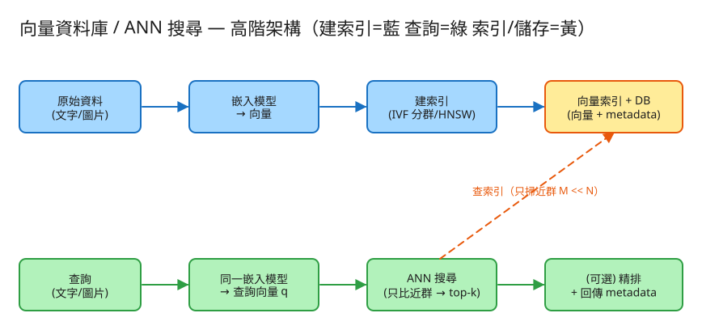

G 搜尋/索引 建議 48 分鐘 Design a Vector Database / ANN Search
| 指標 | 假設 | 推算 |
|---|---|---|
| 向量數 N | 10 億筆 | 每筆一個 metadata，索引需分片 |
| 維度 d | 768 維（典型 BERT 類嵌入） | 每筆 768 × 4B(float32) ≈ 3 KB |
| 原始向量總量 | 10 億 × 3KB | ≈ 3 TB（純向量，未含索引/metadata） |
| 暴力 kNN 成本 | 每查詢比 N 筆 × d 維 | 10 億 × 768 ≈ 7,680 億次乘加 / 查詢 → 不可行 |
| 查詢 QPS | RAG / 推薦線上查詢 | 數千～數萬 QPS，必須 ANN + 索引常駐記憶體 |
# 新增向量（寫）
POST /api/v1/vectors
Body: { "vec": [0.12, -0.03, ...], "meta": { "doc_id": 42, "lang": "zh", "ts": 1717200000 } }
→ 201 { "id": 100123 }
# 相似度搜尋（讀，高頻）
POST /api/v1/search
Body: { "vec": [...], "k": 10, "metric": "cosine",
"filter": { "lang": "zh" }, "nprobe": 16 }
→ 200 {
"results": [
{ "id": 100123, "score": 0.92, "meta": {...} },
...
]
}
# 刪除 / 更新（重建該向量的索引歸屬）
DELETE /api/v1/vectors/{id}
nprobe（要探查幾個群）是讓呼叫端調速度/召回率的旋鈕。# 向量 + metadata（核心儲存）
vectors:
id → { vec: float[d], meta: { doc_id, lang, ts, ... } }
# ↑ 原始向量（供精算/精排） ↑ 過濾與回顯用
# 索引結構（二選一或混用）
# ── IVF（倒排檔）：先把向量分成 nlist 群，每群一個 centroid
ivf:
centroids: [ c0, c1, ..., c_{nlist-1} ] # 每群的中心向量
invlists: { c0 → [id, id, ...], c1 → [...] } # 倒排檔：群 → 成員 id
# ── HNSW（分層小世界圖）：點之間連邊，分多層，上層稀疏供「快速跳近」
hnsw:
nodes: { id → { neighbors_by_layer: [[...],[...]] } }
# 全集統計
stats: { N: 向量總數, d: 維度, nlist, metric }
✏️ 用 Excalidraw 開啟編輯（diagram.excalidraw）線上編輯：把 diagram.excalidraw 拖進 excalidraw.com 即可改圖。
建索引 ─▶ 原始資料 ─▶ 嵌入模型 ─▶ 向量 ─▶ 建索引(IVF 分群/HNSW 圖) ─▶ 向量索引+DB
▲
查詢 ──▶ 查詢(文字/圖) ─▶ 同一嵌入模型 ─▶ 查詢向量 q ─▶ ANN 搜尋(只比近群) ─┘
│
└─▶ (可選)精排 ─▶ Top-K + metadatadot(a,b) / (|a|·|b|)，範圍 [-1,1]，越大越像。算 q 對全部 N 筆的相似度，排序取前 k。結果保證最正確（召回率 100%），是評估 ANN 的「正確答案」。代價是每查詢 O(N·d)，N 上億就跑不動——所以它只當基準，不上線。
nlist 群，每群算一個 centroid（中心向量），並建「群 → 成員」的倒排檔。nlist 個 centroid（很少），挑最近的 nprobe 個群，只在這幾個群裡的向量做精算。nprobe 越大，掃越多、越準、越慢——這就是旋鈕。把向量當圖的節點，相近的連邊；分多層，上層稀疏（大跳）、下層密集（精修）。查詢從上層入口貪婪地往「離 q 更近」的鄰居走，逐層下沉到最底層收斂。查詢複雜度約 O(log N)，召回率通常比 IVF 高，但記憶體（存圖的邊）與建置成本較高。
ANN 可能漏掉「真正最近卻落在沒被探查的群 / 沒走到的圖區域」的向量 → 召回率 < 100%。召回率＝ANN 的 top-k 命中暴力答案 top-k 的比例。調 nprobe（IVF）或 efSearch（HNSW）就是在「快」與「準」之間滑動。
PQ（Product Quantization，乘積量化）把向量切成幾段、每段用「碼本」近似成一個小整數 → 可壓到原本的 1/8～1/32。代價是相似度變成「近似的近似」，常用「PQ 粗篩 → 原始向量精排」補回精度。
| 階段 | 瓶頸 | 對策 |
|---|---|---|
| 單機索引 | 3 TB 向量裝不進記憶體 | 量化壓縮（PQ） + 依 id 雜湊分片(shard)，每片一台 |
| 查詢延遲 | 分片多、要查全部 | scatter-gather：併發查各 shard，gather 合併 top-k |
| 維度太高 | 維度詛咒：高維下「最近」與「最遠」差距變小、分群效果差 | 先降維（如 PCA）+ 用對的度量；提高 nprobe/efSearch 補召回 |
| 建索引成本 | k-means 分群 / 建 HNSW 圖很貴 | 批次離線建、增量更新；新向量先進「暫存區」線性掃，定期 merge 進主索引 |
| 更新 / 刪除 | IVF/HNSW 不易就地改 | 刪除先打 tombstone，背景重建；近即時靠小段索引 + merge |
本題 demo 著重於向量搜尋的核心邏輯（也是面試真正的考點），可實際用 PHP 內建伺服器跑起來：
src/Similarity.php cosine / 內積相似度。src/VectorIndex.php 暴力 kNN（掃全部 N，當正確答案基準）＋ ANN（IVF 倒排檔）：簡化 k-means 分群 → 查詢只比最近 nprobe 個群 → 回報掃描數與召回率。src/VectorStore.php 向量 + metadata 的 JSON 持久化（檔案鎖）。public/index.php 路由：GET /（加向量、kNN 查詢看「暴力掃 N 個 vs ANN 只掃 M 個」與結果差異）、POST /api/vectors、GET /api/search?q=&k=&mode=brute|ann&nprobe=、GET /api/state；預設塞 9 筆 4 維「假嵌入」（分水果/交通/天氣 3 群）。# 啟動
cd demo
php -S localhost:8052 -t public
# 瀏覽器開 http://localhost:8052，輸入查詢向量 q，按「兩者比較」：
# 暴力 kNN 掃 9 個；ANN(nprobe=1) 只掃 3 個（一個群）、看召回率
# 試 q=0.5,0.5,0,0（落在群邊界）→ ANN 召回率會掉到 0.75，調大 nprobe 補回Faiss / Milvus / pgvector / HNSW 並接真實嵌入模型，查詢與評分語意一致。